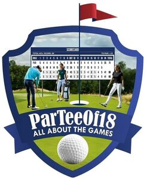

Trade Mark Journal No.2025/037 12 September 2025
WO0000001871670 (9)
Office of origin: United States of America

The literal element PARTEEOF18 ALL ABOUT THE GAMES in white on an outline of a shield design in the color blue in which an image of a golf green appearing in the color green, a golf ball appearing in the color white, and a pin appearing in the color blue with a red flag and a blue and white hole with three players; a man dressed in various shades of blue, a woman dressed in white pants and a green shirt and a woman dressed in white pants with a black shirt standing in front of a leaderboard that appears in the colors blue and white.
The mark contains blue, white, green, red and black.
PARTEEOF18 ALL ABOUT THE GAMES in white on an outline of a shield design in the color blue in which an image of a golf green appearing in the color green, a golf ball appearing in the color white, and a pin appearing in the color blue with a red flag and a blue and white hole with three players; a man dressed in various shades of blue, a woman dressed in white pants and a green shirt and a woman dressed in white pants with a black shirt standing in front of a leaderboard that appears in the colors blue and white.
- Class 9
- Downloadable software in the nature of a mobile application for use by golf enthusiasts, golf players, golf professionals and golf club administrators to provide a wide array of functionality including allowing players to reserve tee times, register and participate in tournaments organized by clubs, manage player profiles including personal information and performance statistics, provide geospatial location of courses and reading of courses, schedule golf games, invite other players to play, keeping score in all types of golf games with friends or competitors, enable golf players and professionals to verify player scores and ensure their accuracy, post scores to the tournament leader board, create and manage tournaments and details thereof, manage tournament rosters of players and pros, handle logistics, operations and communication, manage fair grouping of players based on handicap, posting and syncing of handicaps with the USGA and GHIN, manage all users across the platform including fans, players, pros, club representatives, allow wallet-to-wallet transfer of funds, enable electronic wagering, allow posting of advertisements and sponsorships, and oversee operations to ensure everything runs smoothly and efficiently.
Ruggiero Holdings LLC
Representative: Francis J. Duffin Wiggin and Dana LLP, One Century Tower, 265 Church Street, New Haven CT 06510, UNITED STATES OF AMERICA